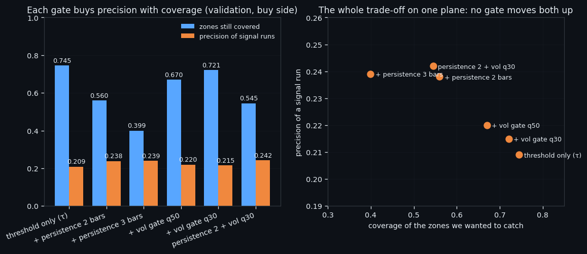
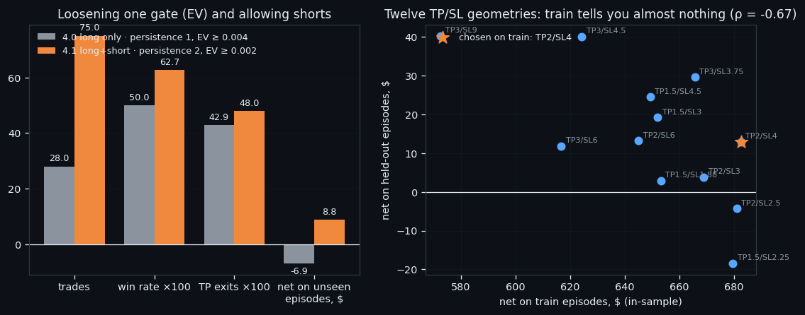
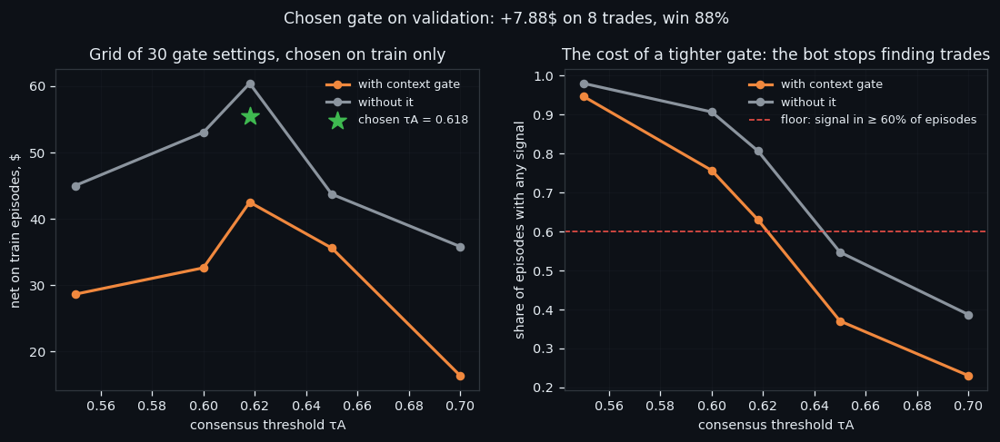

Gates: The Part of a Trading Bot That Decides Not to Trade
A trading bot's model produces a number; its gate decides whether that number is worth a fee. This article measures what gates actually cost. Demanding a signal persist two bars instead of one raises precision from 0.209 to 0.238 and throws away 25% of the opportunities. Bot 4 stacks four gates and still lands inside the noise across random seeds. Bot 6 gates on agreement between two models — and two live lines running that identical gate for a month finished +11.81 and +0.68 USD apart. Gates buy precision with coverage; nothing here is free.
Full walkthrough — streamed from YouTube.
① A gate buys precision with coverage
Every trading bot has two halves, and only one of them gets written about. The first half is the model: it looks at the market and produces a number. The second half is the gate — the rule that turns that number into "act" or, far more often, "do nothing". In our systems the gate is where most of the design work goes, because a raw model signal fires constantly and every firing costs a fee.
The cleanest measurement of what a gate does comes from our zone-finding line, where a model marks the places a perfect trader would use. Take the same model and put four different gates behind it:
| gate | zones still covered | precision of a signal run | combined train score | |---|---|---|---| | threshold only (τ = 0.87) | 0.745 | 0.209 | 0.2901 | | + must persist 2 bars | 0.560 | 0.238 | 0.2598 | | + must persist 3 bars | 0.399 | 0.239 | 0.2144 | | + volatility floor (q30) | 0.721 | 0.215 | 0.2678 |
Read the first two columns as a single trade. Demanding that a signal survive two bars instead of one raises precision from 0.209 to 0.238 — about 14% better — and costs 25% of the opportunities. Going to three bars costs another 29% and buys almost nothing: precision 0.239 against 0.238. The volatility floor is the gentlest of the four and moves both numbers least.
So the honest description of a gate is not "it makes the signal better". **A gate buys precision with coverage**, at a rate the data sets, and past a point the rate goes bad. The combined score in the last column — which weighs both — peaks at the plainest gate of all and falls with every addition. That is the trap this whole article is about: gates feel like improvements, and each one has to be paid for in trades you will never take.

② Bot 4: four gates in a stack
Bot 4 is where this gets concrete. Its entry rule is a stack of four independent gates, and a trade happens only if all of them open:
1. probability — the classifier's chance of the move must clear π = 0.55; 2. expected value — the EV model must clear 0.002, so a likely move that is too small to pay the fee is refused; 3. persistence — the first two must hold for 2 consecutive bars, which is the same persistence gate as in the table above; 4. volatility — an optional floor on predicted volatility, which the grid search left switched off (None), because on our data it removed more good trades than bad ones.
Every threshold is picked on the training episodes only. The geometry — take profit 2% against stop loss 4% — comes from the same training data, guided by a fixed house rule: the take profit is always smaller than the stop. The reasoning is the swing statistics, not taste: the median 48-hour swing is 5.26%, and a 2% target is reached from 33.5% of training bars.
What loosening a gate does, measured on episodes the bot never saw:
| version | gates | trades | win rate | take-profit exits | net on unseen episodes | |---|---|---|---|---|---| | 4.0, long only | persist 1, EV ≥ 0.004 | 28 | 50.0% | 42.9% | -6.88 USD | | 4.1, long + short | persist 2, EV ≥ 0.002 | 75 | 62.7% | 48.0% | +8.85 USD |
Loosening EV while tightening persistence — and allowing shorts — nearly tripled the number of trades and turned -6.88 into +8.85 USD. It would be easy to stop here and call it a win. We do not, for one reason: across three random seeds the same configuration averages -19.7 USD with a spread from -53.2 to +8.8, against buy & hold at -18.3. The gate settings are inside the noise of which episodes you happened to test on.
The strongest evidence for that caution is the geometry grid. Twelve take-profit/stop-loss pairs, each scored on training episodes and on held-out ones. The correlation between the two columns is ρ = -0.67 — negative. Choosing the geometry that looked best in training was, on this data, slightly worse than choosing at random. That is not an argument against gates; it is an argument against believing the number you tuned them on.

③ Bot 6: the gate is agreement
Bot 6 uses a different kind of gate, and it is our favourite one because it cannot be tuned into a corner: agreement. Two independent models look at the same market. The trade happens only when both say the same thing, the ensemble's confidence clears τA = 0.618, and a context check confirms the wider state. There is no threshold on "how strong" beyond that — the gate is a vote, not a dial.
The grid that chose it had 30 settings and one hard floor: any candidate that produced a signal in fewer than 60% of episodes was rejected outright, however profitable it looked. A gate that almost never opens will show a beautiful win rate on the two trades it allows, and that is exactly the way to fool yourself.
Chosen on training data: **+55.44 USD over 48 trades, win rate 85%**, a signal in 75% of episodes, median wait 9.4 h and median holding 12.1 h. On the validation period it never saw: **+7.88 USD over 8 trades, win rate 88%**, signal in 80% of episodes. The cycle is roughly 22 hours from "start looking" to "position closed" — this is a gate that spends most of its life shut.
Then it went live, twice, with the same recipe on two independent lines. As of 2026-08-17:
| line | days live | closed trades | net | win rate | how they ended | |---|---|---|---|---|---| | 60 | 33 | 9 | +0.68 USD | 44% | 7 of 9 by the 72-hour timeout | | 61 | 31 | 9 | +11.81 USD | 89% | 7 of 9 hit take profit |
Same gate, same thresholds, same six coins, one month each — and one line makes +11.81 USD while the other makes +0.68. We are not going to tell you the second one is better tuned. With nine trades apiece, the honest reading is that this is what nine samples look like, and the useful signal is in the last column rather than the money column: on line 60 the position is usually closed by the clock, not by the target. A gate that opens on agreement can be right about "something is coming" and still be attached to a move that takes longer than the bot is allowed to wait.
That is the working conclusion of everything above. The gate is not the part that finds money; it is the part that decides how often you are allowed to be wrong. Ours are chosen on data the bot never sees afterwards, they are kept as blunt as possible, and every one of them is measured in trades refused — because that is the price, and the price is always paid.

If this changed how you read the tape, the natural next step is Volume Is the Fuel — Not the Steering Wheel — We recorded the Binance order book every second for six coins over five months and ran eighteen tests on what volume really does.
Volume Is the Fuel — Not the Steering Wheel
We recorded the Binance order book every second for six coins over five months and ran eighteen tests on what volume really does.
About Market Research Lab — What We Collect and Why
Most market commentary is storytelling.
From Calm to Calm: a Standard for What Counts as a Signal (BTC)
We stopped defining market signals with a stopwatch.
The Wall That Goes Quiet: What Resting Liquidity Predicts
We measured resting limit liquidity sitting on both sides of the book second by second across six coins, and asked the only question that matters:….
Comments
Discussion is powered by GitHub. Enable it by adding secrets/giscus.json (repo IDs from giscus.app).